01 / PROJET PRINCIPAL↗
Ansible · Linux
Automatisation et validation d’un serveur Linux
Rôles, playbooks, agents Zabbix et Cyberwatch, contrôles SSH, rapports, scripts Bash et versionnement Git.
Voir la fiche détaillée ↗SYNTHÈSE DE MON STAGE
Dans le cadre de mon BTS SIO option SISR, j’ai effectué un stage chez RCM, groupe présent dans l’automobile, le véhicule utilitaire et industriel ainsi que le nautisme. Son organisation multi-sites nécessite un système d’information fiable et des interventions variées pour accompagner les utilisateurs.
Ma mission principale consistait à faire évoluer un projet Ansible destiné à contrôler et automatiser l’administration d’un serveur Linux de test. J’ai repris une structure existante, travaillé sur les rôles et playbooks, vérifié les accès SSH et déployé des agents de supervision et de sécurité. J’ai ensuite créé des outils de validation, des rapports HTML, un menu Bash, des contrôles qualité et une documentation pour faciliter la reprise du projet.
En parallèle, j’ai participé au support informatique : réinstallation de Windows 11, préparation de postes, installation d’Ubuntu, diagnostic matériel, participation à des interventions de téléphonie et déplacement dans une concession. Ce stage m’a permis de mieux comprendre l’importance de la méthode, des tests, de la traçabilité et de la confidentialité en environnement professionnel.
RÉALISATIONS PROFESSIONNELLES
Chaque fiche précise le contexte, ma contribution, la méthode, le résultat et les compétences mobilisées.
Rôles, playbooks, agents Zabbix et Cyberwatch, contrôles SSH, rapports, scripts Bash et versionnement Git.
Voir la fiche détaillée ↗Installation Windows 11 et Ubuntu, clés USB bootables, diagnostic HP/Lenovo et assistance téléphonie 3CX.
Voir la fiche détaillée ↗ENVIRONNEMENT TECHNIQUE
Les logos fournis illustrent les outils découverts ou utilisés au cours du stage. Leur présence ne signifie pas que je les ai tous administrés personnellement.
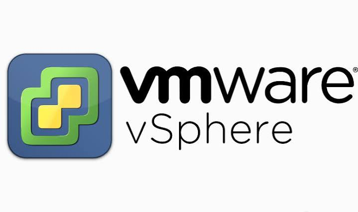
Virtualisation : consultation et préparation d’une machine Linux de test.
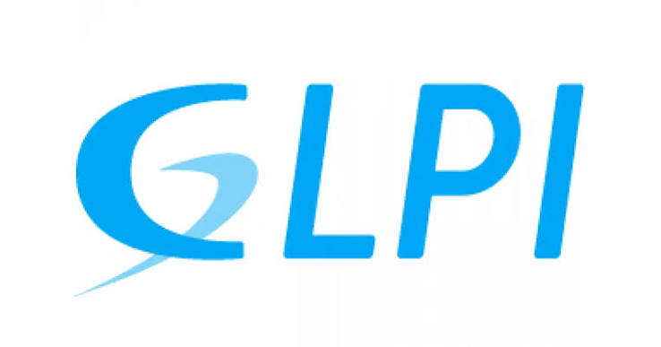
Outil de suivi des demandes et de gestion du parc découvert au service.
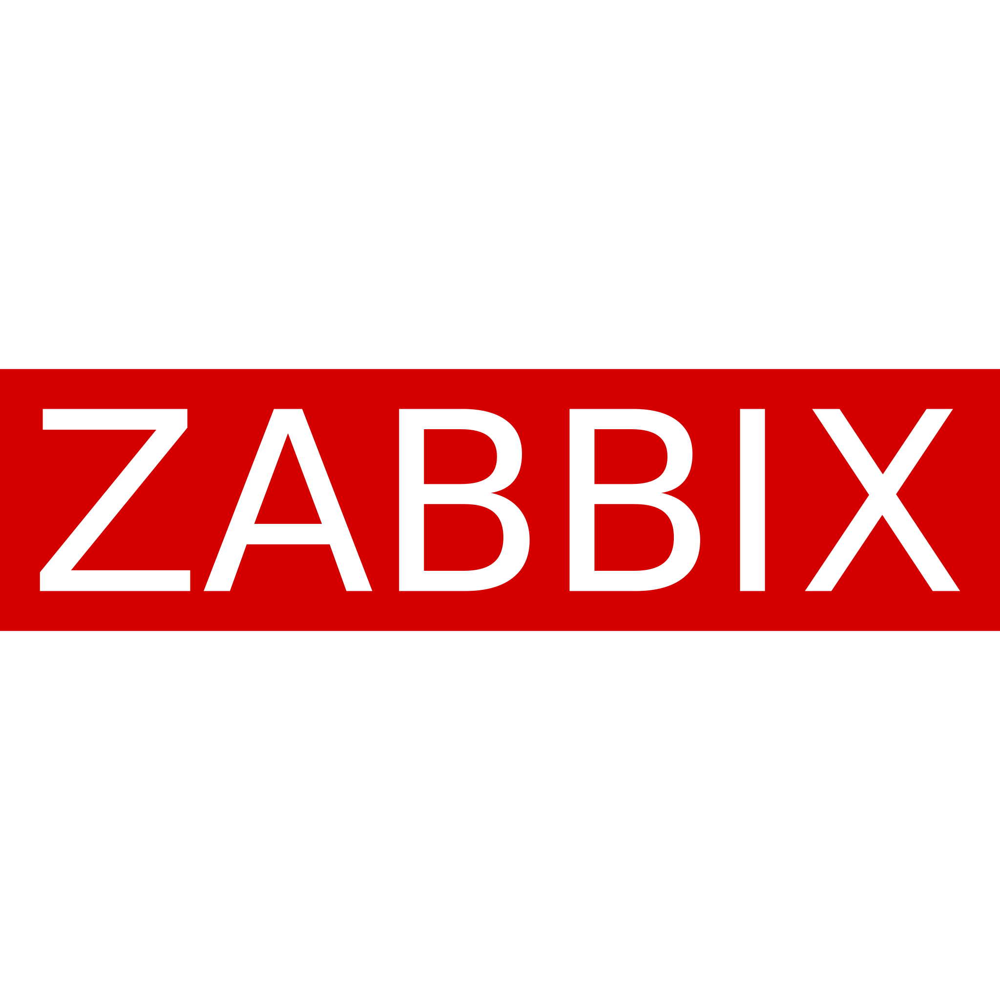
Supervision : installation et contrôle de l’agent Linux dans le projet Ansible.
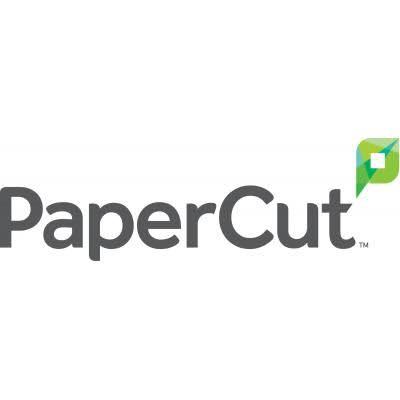
Gestion des impressions et des imprimantes, observée pendant le stage.
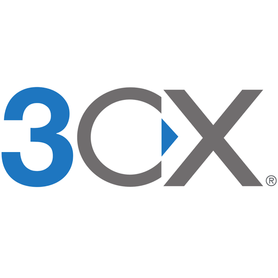
Téléphonie : participation à la configuration d’un téléphone de test.
Suivi des vulnérabilités ; travail sur le déploiement et les diagnostics de l’agent Linux.
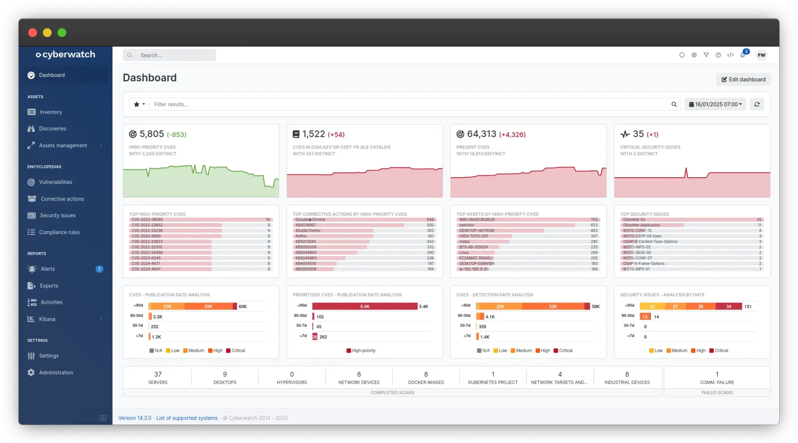
FOCUS CYBERSÉCURITÉ
J’ai découvert le suivi des vulnérabilités et travaillé sur l’installation d’un agent Linux, ainsi que sur la résolution de problèmes de dépôts et d’accès.
Visuel d’illustration fourni : il ne s’agit pas d’une capture prouvant une intervention personnelle.
EXTRAITS DU RAPPORT RCM
Un corpus de documents issu de mon rapport : accès Linux, agents, rôles Ansible, scripts, validation et installation d’Ubuntu. Clique sur une vignette pour l’agrandir.
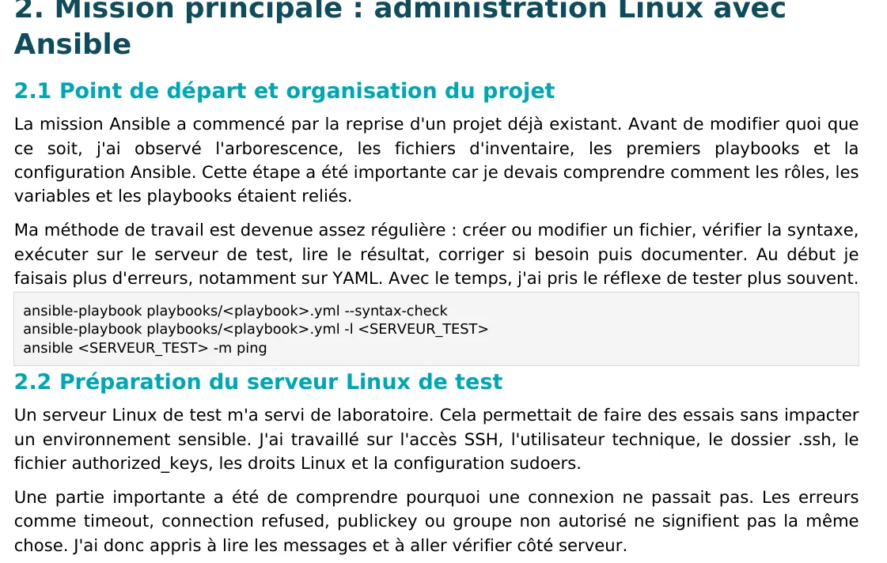
Préparation du serveur LinuxExtrait du rapport · p. 7 · accès SSH et contrôles préalables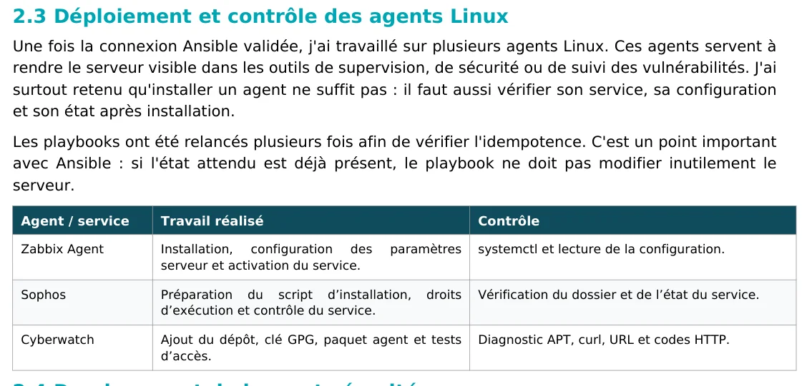
Agents de supervisionExtrait du rapport · p. 8 · Zabbix, Sophos et Cyberwatch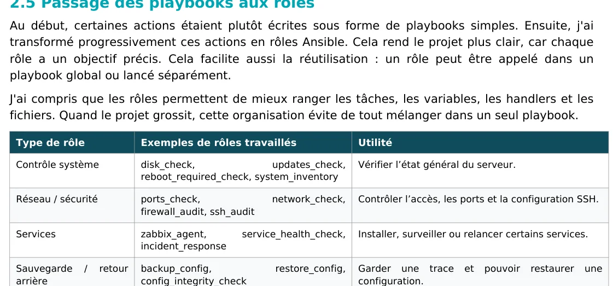
Structuration des rôlesExtrait du rapport · p. 9 · rôles et contrôles Ansible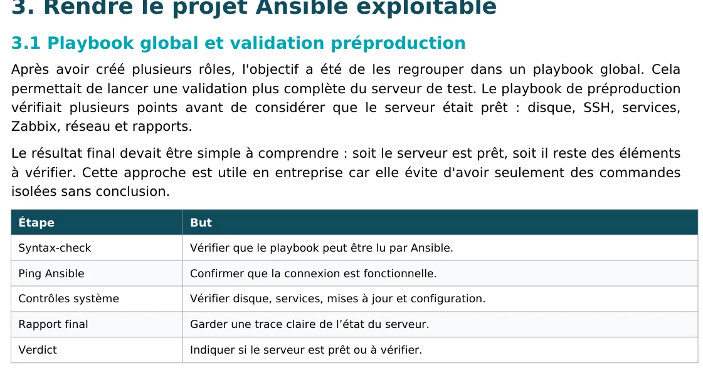
Validation et rapportsExtrait du rapport · p. 10 · contrôles et tableau de bord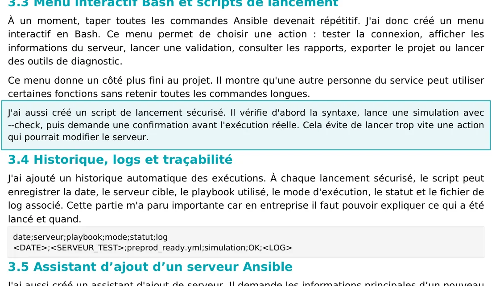
Menu Bash et traçabilitéExtrait du rapport · p. 11 · scripts et suivi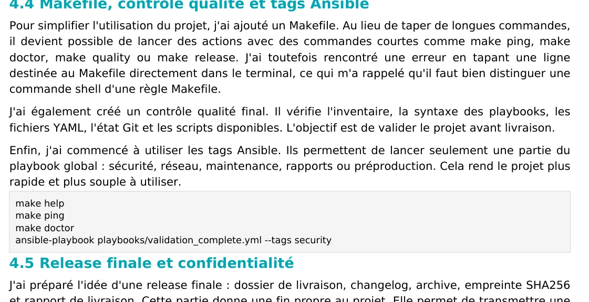
Contrôle qualité du projetExtrait du rapport · p. 13 · Git, Makefile et vérifications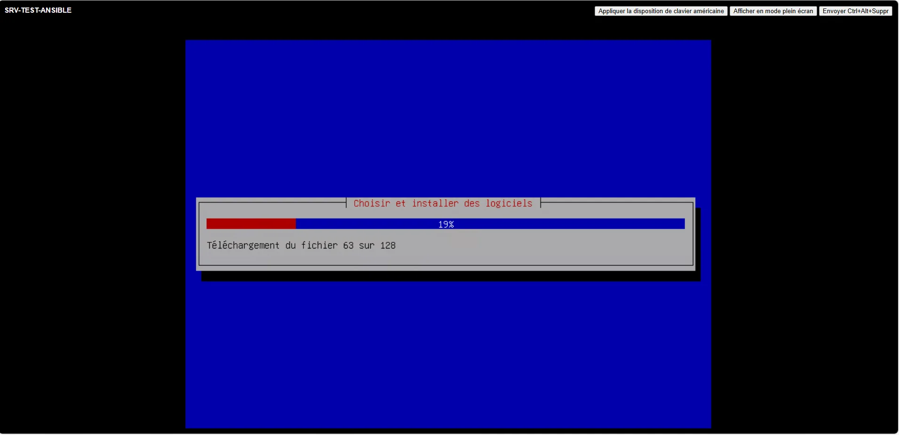
Installation d’UbuntuCapture d’écran intégrée au rapport · p. 14BILAN PERSONNEL
Un service informatique ne se limite pas à installer ou réparer : il faut vérifier, documenter, sécuriser et transmettre. L’évolution de mon projet Ansible m’a donné davantage d’autonomie dans la résolution d’erreurs et la préparation d’un travail réutilisable.